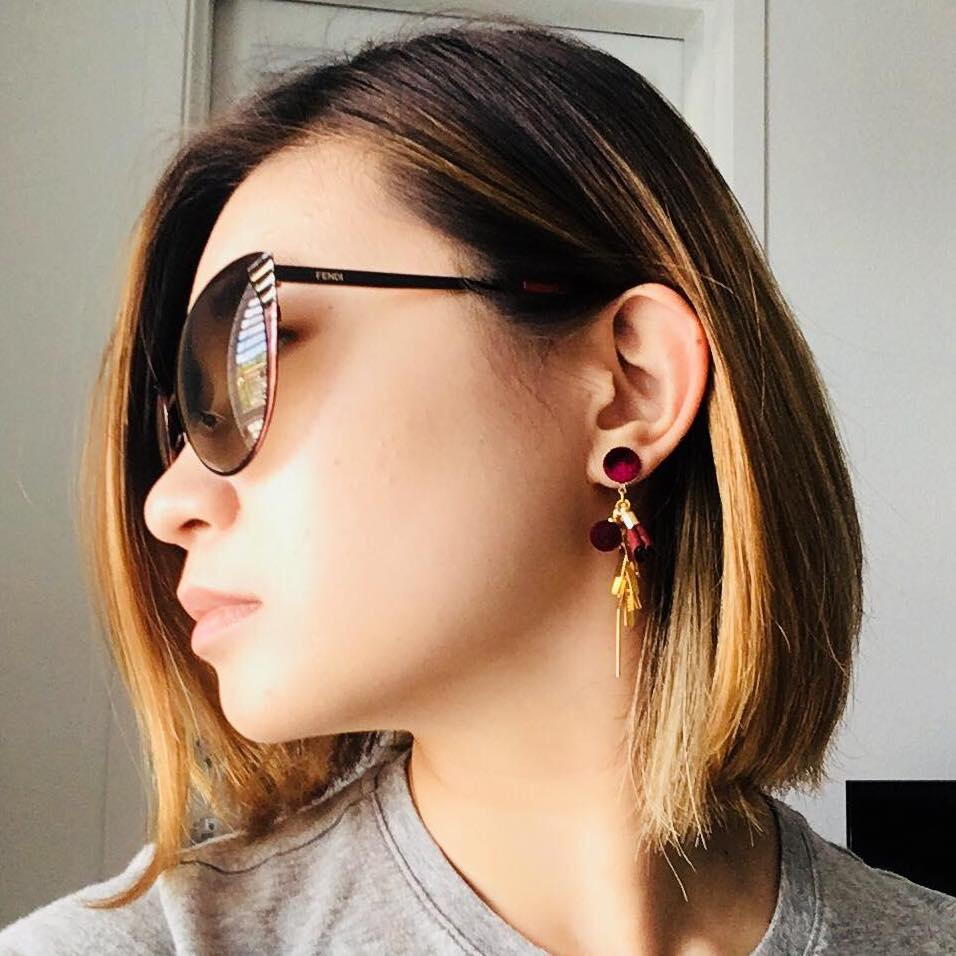

Hey! It's Tammy.
I'm an experienced full stack developer with a background in traditional and graphic design. My resume describes some of my previous experiences much better.
I also study Software Engineering at the University of Waterloo, Canada.
Right now I'm mostly interested in game dev and security, and honestly anything that you can convince me is cool.
You can also find me at: